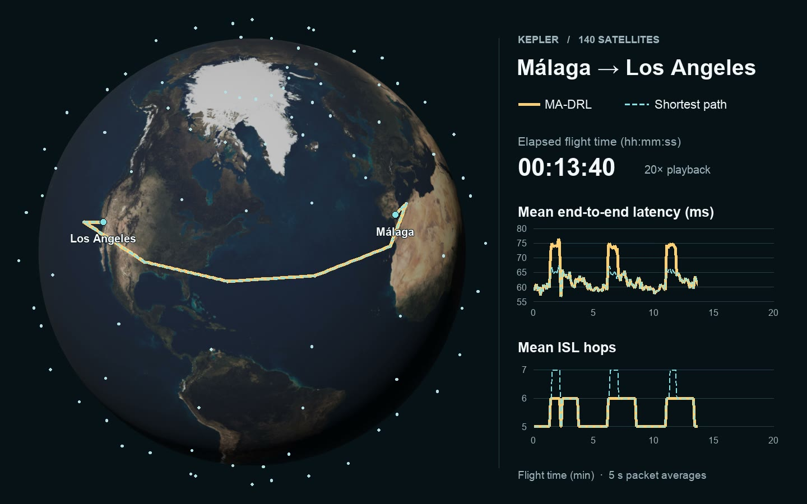
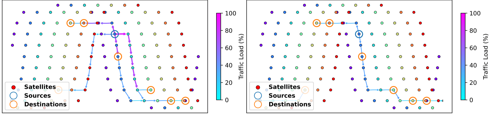

Research
How can spacecraft decide where to send data as their connections change? My work explores this question in satellite constellations and teams of lunar rovers.
Satellite networks
-

Decentralized satellite routing
Satellites learn from their neighbors to route packets as orbits and traffic change.
Project and simulator -

Multicast routing and downlink allocation
How should a constellation share routes and downlink capacity when several destinations need the same data?
Read the paper